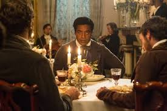

|
“며칠 전까지만 해도 가족과 있었는데..
1840년대 미국에서는 노예 수입이 금지되자 흑인 납치 사건이 만연하게 된다. 미국내 자유주(州)의 흑인을 납치해 노예주(州)로 팔아 넘기는 것. 실제로 미국에서는 노예해방령에 의해 노예제도가 없어진 후에도 흑인들을 납치하여 인신매매하는 일들이 있었다. 그 예가 솔로몬 노섭과 농학자 조지 워싱턴 카버의 어머니, 메리이다.
1841년 뉴욕. 아내 그리고 두 명의 아이와 함께 자유로운 삶을 누리던 음악가 솔로몬 노섭(치웨텔 에지오포)은 어느날 갑자기 납치되어 노예로 팔려간다. |
모든 등장인물들은 입체적이다. 주인공 솔로몬 노섭은 노예 12년을 통해 인간에게 진정한 자유의 의미가 무엇이며
육체노동에 대한 정당한 대가와 인간으로써 기본적으로 가져야 할 권리를 이야기하고 있다. 노예 소유주의 성을 따르는 관습에 따라 솔로몬 노섭은 이후 주인이 세 번 바뀌면서 ‘플랫 포드 - 플랫 티비츠 - 플랫 앱스’라는 이름으로 불리며 12년 동안 노예의 굴레가 씌워진 채 살았다.그의 아버지를 노예로 소유했던 주인의 아들 헨리 노섭이 뉴욕 주지사와 여러 관청에서 솔로몬이 자유인임을 증명하는 문서를 가지고 찾아와 1853년 1월 구출됐다. 솔로몬 노섭은 납치되어 남부지방에서 12년간 비참한 노예생활을 하다가 북부 주정부에 의해 극적으로 구조되었다. 그는 이 일련의 과정을 통해 남부 지방의 잔인한 백인들의 행위와 극단적인 육체노동에 시달리는 노예제도를 고발하고 있다. 촬영은 루이지애나주의 뉴올리언스에서 2012년 6월 27일부터 8월 13일까지 약 2천만 달러의 제작비로 이루어졌다. “정말에 빠져있지 않을거야..

|
일관되게 이루어져 있다. 한스 짐머가 작곡한 영화음악은 이 영화에서 중요한 축을 담당한다. 공동 제작자 브래드 피트가 등장했던 다소 산만한 3막 카메오 부분만을 제외하면 내러티브의 장인 정신 측면에서 거의 완벽에 가까운 작품. 영화는 책에서 언급된 중요한 사건을 하나 건너뛰었다. 솔로몬은 티베츠와 다시 한 번 싸움을 벌였고, 목숨을 구하기 위해 탈출에 성공했지만 얼마 후 다시 포드에게 돌아온다. 또한 농장주가 고용한 경비병들이 도로를 순찰하고 있었으며 당시 누구나 노예에게 여행 증명서를 요청할 수 있고, 증명서가 없으면 당국에 넘길 수 있는 등 그가 탈출하지 못한 이유에 대해서는 언급하지 않았다. “This film is based on a true story.”
짐승으로 살았던 인간의 기록. 그 과정에서 가장 근원적인 인간의 고뇌에 몸부림쳤을 것이다.
관객이 영화를 보고 극장을 떠나 현실로 접어들 때 그들이 근현대의 증거 속에서 살고 있다는 점을 자각한다. 역사의 증거는 늘 우리의 주변에 존재한다.
노예가 된 이후의 솔로몬 노섭은 자신이 무엇을 위해 살고 있는지를 잊어본 적이 없는 인물이다.
우리 모두는 단순히 생존하는(survive)것이 아니라 인간답게 살아갈(Live) 권리와 자격이 있다는 사실. |